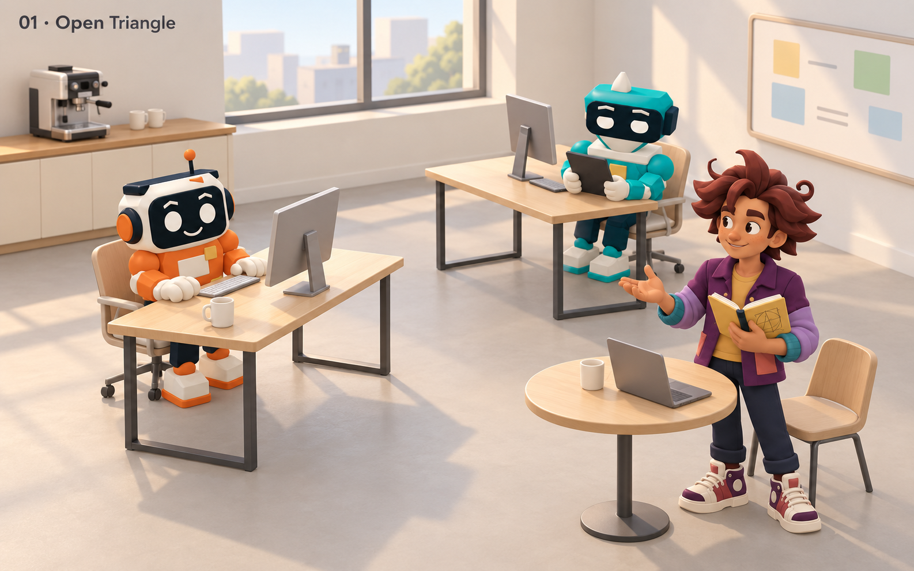
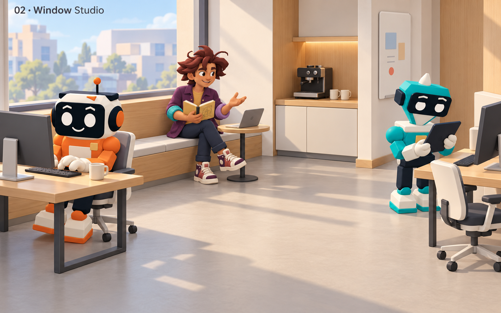
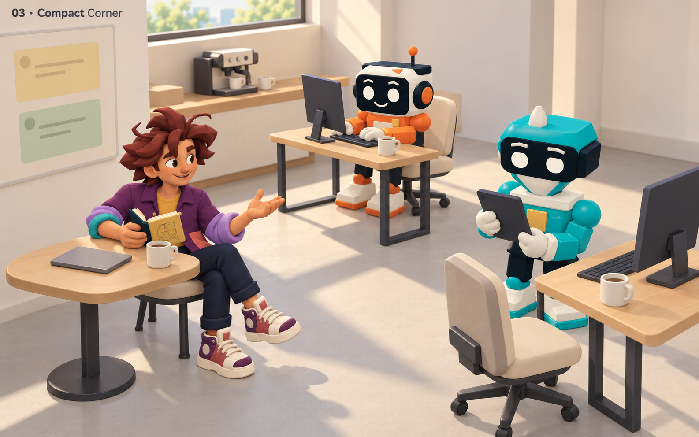
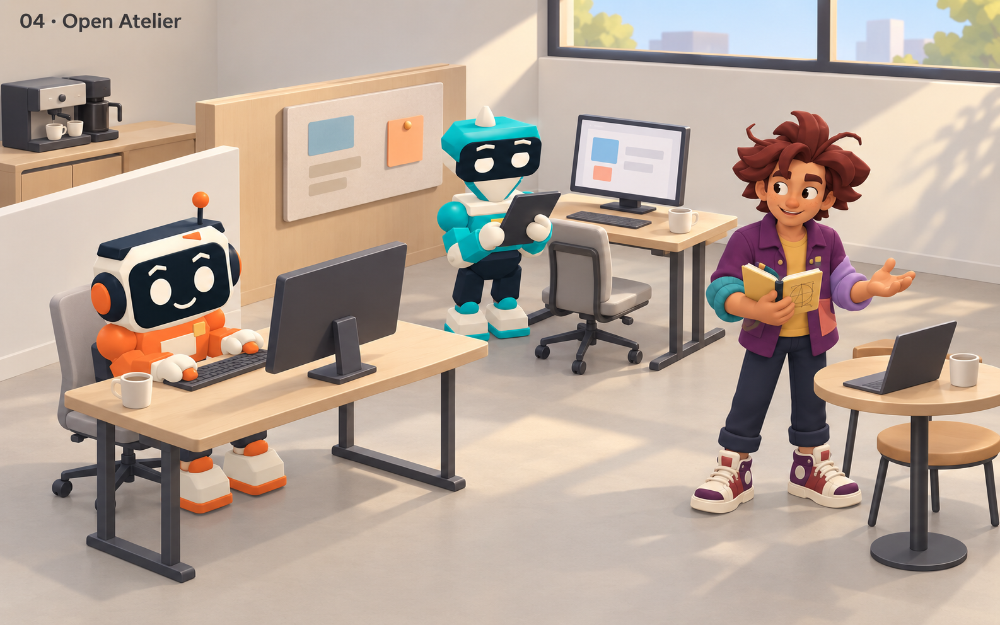

ZipperCrew · Environment exploration · 6 October 2026
A quieter Corner Café
A clean stage for the cast: no rugs, quiet continuous floors, light desks, compact coffee stations, restrained brief surfaces, and open circulation. Warmth comes from wood, proportion and daylight.
The Human uses the approved B · The Spark identity with a little softer curl language from C. The orange Implementer and teal Reviewer retain their established designs. These four generated studies explore layouts; production geometry and runtime are unchanged.

01 · Open Triangle — clearest relationship between the crew.

02 · Window Studio — strongest café seating identity.

03 · Compact Corner — intimate framing, tighter circulation.

04 · Open Atelier — brief on a divider, more studio-like zoning.
01 · Open Triangle
Recommended starting point. Three distinct work areas communicate across an open center. The thin desk frames and uncluttered floor give the colorful cast room to read. A production version should make the right-hand brief smaller and retain visible routes behind the chairs.
02 · Window Studio
The window bench gives the Human a natural café position without lounge decoration. The coffee nook is compact and legible. This camera is lower and crops the workstation edges: raise it modestly for the live room so movement routes and interaction points remain inspectable.
03 · Compact Corner
The closest, most conversational composition. Faces and characteristic poses dominate. Its tighter footprint would need more clearance behind the Reviewer chair, and the brief could be reduced further. Best as a character-framing study, less strong as the default navigation layout.
04 · Open Atelier
The brief becomes a collaborative surface rather than a teaching wall. The divider provides clear zones, but adds visual mass and risks a cubicle-like atmosphere. Keep dividers shorter or remove one if taking this direction forward.
What to carry forward
Start with 01's open circulation and crew triangle. Consider 02's simple bench as an alternative Human station. Retain a plain pale floor, slender pale-wood desks, one compact espresso station, and one understated brief. Keep the Human's expressive hair, plum layers and notebook gesture as the emotional focus.
Built-in image generation; exact prompts and source-output filenames are recorded in prompts.json. These are visual concepts, not validated meshes, collision plans or Babylon screenshots. Generated materials are somewhat richer than the intended runtime kit; simplify grain, upholstery seams and lighting detail when authoring game assets. No production assets, assistant profiles or workflow semantics were changed.